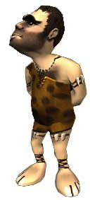
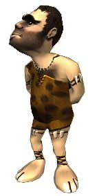
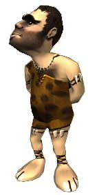

CARRERA DE JUGADORES MÚLTIPLES
La carrera de jugadores múltiples es igual al modo de práctica, pero con 2 a 6 jugadores. El jugador que completa la carrera y llega en primer lugar, gana.

ÍNDICE

 
